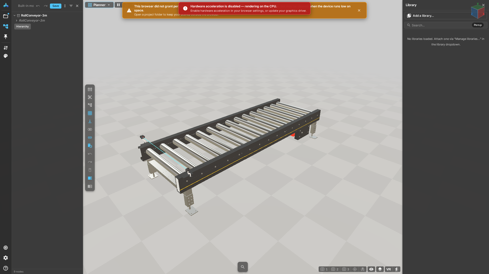

界面与视角
适用条件
模型已经加载。工作区、部署锁和嵌入方式会影响可见按钮；没有入口不一定是故障。
操作
- 拖动画布旋转，滚轮改变距离；在触控板或触屏上采用浏览器与设备支持的手势。
- 按 Shift+F 适配整个模型。必要时先取消当前工具，再操作视角。
- 打开 层级 查找零件，点击对象查看可用属性。模型和设备名称属于用户数据，不随界面语言翻译。
- 在设置的语言选择中切换中文或英文。刷新应恢复个人选择，不改变共享项目。
- 点击帮助按钮或按 F1。帮助按当前面板和工作区选择主题；文本输入期间 F1 不抢占键盘。
层级
层级展示当前文档及对象。文档卡片中的更多菜单提供当前文档支持的操作；只读引用和编辑副本的操作可能不同。
工具条
测量、标注和视角工具可能因工作区而变化。退出工具后再拖动浏览；不要把场景中的设备动作当成相机操作。
设置
设置受部署策略约束。Kiosk、访客和嵌入环境可能隐藏帮助或诊断入口。帮助未启用时，可直接打开交付包的用户手册。
预期结果与失败处理
相机变化不修改模型几何；语言选择只改变界面。操作后模型不可见时先适配视图，再检查层级可见性。若仍不可见，查看 模型导入 和 诊断。

操作视频
操作视频 · WebM · 164 s · zh-CN VTT · en-US VTT
文字步骤
- 0:00 — 打开随版本提供的公开输送机示例，等待资源就绪。
- 0:23 — 拖动画布旋转模型，用滚轮缩放。
- 0:54 — 按 Shift+F 适配模型，然后查看层级。
- 1:26 — 设置中的视觉页提供语言选择。
- 1:55 — 切换中文。界面语言不会改写设备名称或项目。
- 2:18 — 切回英文。帮助可从按钮或 F1 打开。